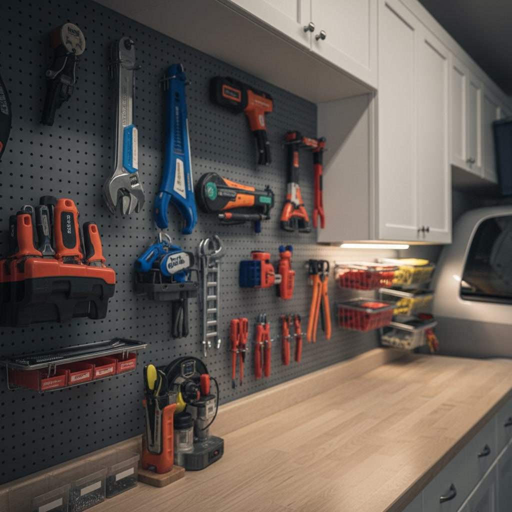

The garage at the Canmore place fills up between visits: a chest freezer from the last owner, three generations of skis, a broken paddleboard, a pallet of recycling nobody had time to walk to the depot. We clear it while you're in Calgary, keep anything that draws bears out of the garage, and route every load around Canmore's bins, depot and landfill rules.
Canmore runs its garbage differently from Calgary, and that shapes a garage cleanout more than the size of the garage does. There's no curbside garbage pickup. Households carry their garbage to animal-proof brown bins in each neighbourhood, food waste goes in its own bins, and recyclables are banned from garbage by bylaw. The nearest landfill, Francis Cooke at Exshaw, is a Class III site that takes dry, inert material only. A load that would go to one Calgary landfill in one trip has to be split before it leaves your driveway.
For a quote, email inquiry@garagescape.ca three photos: the garage from the driveway with the door open, the inside from the doorway, and anything large you already know is going (a freezer, a hot tub cover, old furniture). Tell us whether it's a house, a townhouse in a complex or a condo, and who has keys. Or call (587) 804-9266 and we'll walk through it on the phone.
Before we book, we sort your photos into the streams below. It tells you which items you (or your property manager) can deal with for free, and which ones need our truck.
| What's in the garage | Where it goes | The rule that matters |
|---|---|---|
| Bagged household garbage | Brown animal-proof neighbourhood bin | Latch the door fully. If the bin is full, use the next nearest one. Nothing left beside it. |
| Food scraps, spoiled freezer contents | Neighbourhood food waste bin | Food waste isn't garbage in Canmore, and the Town says to store it indoors until it goes out. |
| Cardboard, plastics, cans, paper | Neighbourhood recycling bins or the Boulder Crescent Recycling Depot | Banned from garbage bins. The depot takes more than the blue bins do, but no commercial waste. |
| Furniture, appliances, mattresses | Town of Canmore large item pickup | Free for residential addresses, two pickups a year, six items each. Booked through the Town's form. |
| Paint, solvents, fuel, cleaners with hazard symbols | Boulder Crescent Recycling Depot, 115 Boulder Crescent | Original or labelled containers. Shipped to Swan Hills for treatment. |
| Large propane tanks | A certified propane dealer | The Town directs large tanks back to a dealer. |
| Electronics, car batteries, used oil, antifreeze | Boulder Crescent Recycling Depot | Not accepted on the Town's large item pickup. |
| Refundable bottles and cans | Canmore Bottle Depot, 103 Boulder Crescent | Worth pulling out before the rest of the recycling. |
| Broken lumber, old shelving, dry bulky junk | Francis Cooke Class III Landfill, 2 Heart Mountain Drive, Exshaw | Dry, inert material only. No liquids, food, kitchen garbage, chemicals or hazardous materials. Open Monday to Saturday, 8 a.m. to 4 p.m., no loads after 3:45. |
| Gear that still works: skis, bikes, camping kit, tools | Resale or donation in the valley, or back to Calgary with us | Ask us before you decide it's junk. Working gear can often be sold or donated instead of hauled. |
Sources: Town of Canmore pages on residential food waste and garbage, recycling and large item pickup, and the Bow Valley Waste Management Commission's Francis Cooke rate sheet. Hours and accepted items change, so we check them again before each Canmore job.

The Town of Canmore hauls furniture, appliances and mattresses from a residential address at no charge. If your garage holds a few big items and not much else, the Town pickup may be all you need, and we'll say so when we look at your photos. If it's a full garage, using the pickup for the heaviest pieces takes them off our truck and lowers the quote.
Here's how the two fit together:
One limit we can't work around: the Town pickup is for residents, booked by the household. We don't book it in your name. You or your property manager submit the form, and we work to that date.
In Canmore, a garage full of old stuff is also a wildlife problem. The Town's Community Standards Bylaw treats garbage, recycling, compost, bird feeders, pet food and greasy barbecues as attractants when they're left where dangerous wildlife can reach them, and the Town's wildlife page lists fines starting at $250 for failing to remove them. The local paper has reported a black bear that was later killed after it went into a Canmore garage and got into a chest freezer.
Second homes are the hard case. A garage that sits closed for weeks, then has its door open all weekend while people unload, gives a bear a long time to notice and a short time to act. So on every Canmore cleanout we pull these out first and get them gone that day:
We keep the overhead door down whenever nobody is actively loading, and we don't leave bags or furniture outside when we leave. A closed garage that has sat empty also tends to have mice; we follow the same Alberta hantavirus steps on a Canmore garage as on our acreage outbuilding cleanouts: door open and air moving before anyone works inside, and no dry sweeping.
Many Canmore garages belong to people who live in Calgary, elsewhere in Canada or outside the country. If you can't be there, this is how we run the job:
If the house is a short-term rental, tell us the next check-in. We'd rather book a weekday between guests than work around people arriving with luggage. When the cleanout is part of a sale, the same process works around listing photos; our cleanout before selling page covers how we time it.
Many Canmore garages are in complexes: a row of single garages off a shared lane, or a parkade under a condo building. These jobs are smaller but slower, and the slowdown is almost always access, not volume.
Canmore is about 100 km from Calgary on Highway 1. That changes how we schedule. We don't offer same-day cleanouts in the Bow Valley; we book ahead, bring the crew size and truck the job needs, and aim to finish in one visit. In winter we watch the highway, and if a storm closes in, we'll call you and move the date rather than arrive late with half a day left.
What moves a Canmore quote:
We don't publish a fixed Canmore price, because the drive and the routing differ every time. For how garage hauling is priced in general, including load sizes and billing models, see garage junk removal cost in Calgary.
Once it's clear, two follow-ups come up often in the Bow Valley. The first is the floor: winter road grit and salt come in on the tires and get ground into the slab. Our garage floor cleaning page covers how we deal with it. The second is storage for the gear that stayed. Ski and bike racks, wildlife-smart storage and guest-proof labels are on our Canmore garage organization page, quoted separately once the space is empty.
If the garage belonged to a parent and the house is being settled, start with our estate garage cleanout page; we do that work in Canmore too. If the garage has been packed for many years and the owner finds the process hard, our hoarding garage cleanup page explains how we slow down. For a parent moving from a long-held house into a condo, see downsizing garage cleanout.
Closer to the city, acreage garages and shops are on acreage cleanout in Bearspaw and Springbank. Cochrane is on Cochrane garage decluttering. Inside Calgary, start at garage cleanout in Calgary, or Aspen Woods and Springbank Hill if you're on the west side and need the Calgary house cleared too.
Yes. Canmore is part of our regular service area, about an hour west of Calgary on Highway 1. We book Bow Valley jobs ahead rather than same-day, so the right size of crew and truck makes one trip and finishes the garage in one visit wherever the job allows.
No. Many Canmore garages belong to owners who live elsewhere, and we set jobs up for that. We agree on what stays during a video call or from photos, get access through you, a lockbox or your property manager, set aside anything personal or valuable instead of deciding for you, and send photos of the empty garage before we lock up.
We quote from photos. Four things move a Canmore quote: how much of the load can be handled by your own free Town pickups or a depot drop, how much has to go on our truck by volume and weight, how many separate streams it needs (landfill, metal, paint and hazardous waste, donation), and access, such as a shared townhouse driveway or a single-car garage under a condo. The drive from Calgary is part of every Bow Valley job, so we tell you up front when a few items would be cheaper as a Town pickup.
Only household garbage that fits in the bin. Canmore has no curbside garbage collection; residents use the animal-proof brown neighbourhood bins, and recyclables are banned from garbage by bylaw. Leaving large items beside a bin, or setting them out more than 24 hours before a scheduled Town pickup, can bring a $250 fine under Bylaw 2016-11.
Yes, for residential addresses and at no charge: two pickups per residence per year, up to six items each, booked through the form on the Town's Large Item Pickup page. Appliances, furniture and mattresses are accepted; mattresses and box springs go on Mondays, other items Tuesday to Friday. Commercial waste, renovation and demolition waste, hazardous waste and e-waste are not.
Paint and household hazardous waste with a hazard symbol go to the Boulder Crescent Recycling Depot at 115 Boulder Crescent, open daily 8:30 a.m. to 4:15 p.m.; keep chemicals in their original or labelled containers. The Town says large propane tanks go back to a certified propane dealer. The Francis Cooke Landfill at Exshaw takes dry, inert material only, with no liquids, food, chemicals or hazardous materials.
Yes. For a rental, we book around your calendar and work with your property manager on keys and the keep-list. For a sale, we time the cleanout ahead of listing photos. Either way, the chest freezer, birdseed and old recycling come out first, because they're what draws wildlife to an empty garage.
Yes. GarageScape carries $2 million in general liability insurance, and we can send the certificate to your condo board or property manager before the job.
The driveway with the door open, the inside from the doorway, and anything big that's going. We'll tell you what your free Town pickup can take, what needs our truck, and when we can be there.
Canmore and the Bow Valley, booked ahead from Calgary.